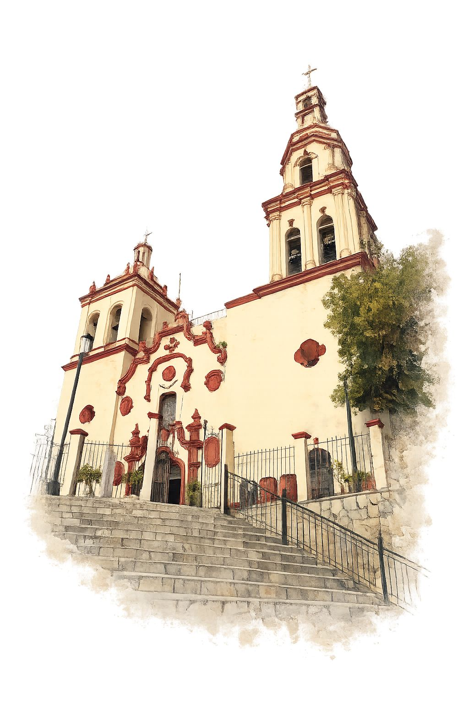
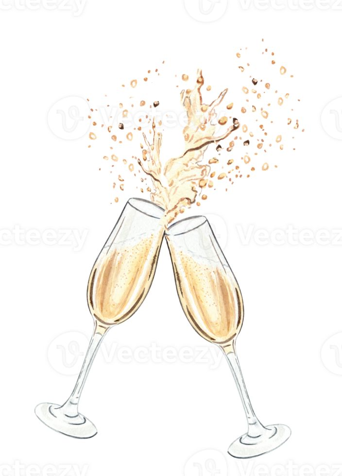
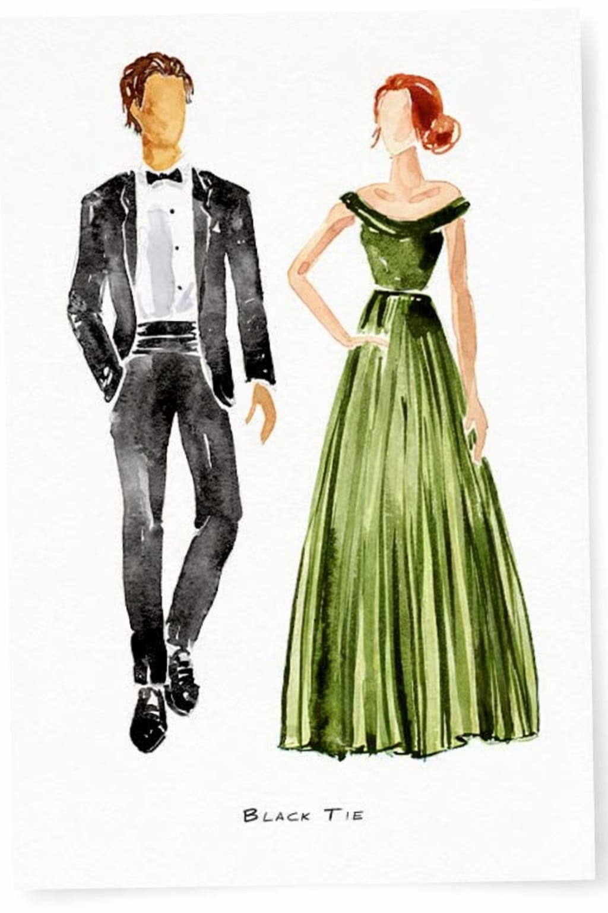
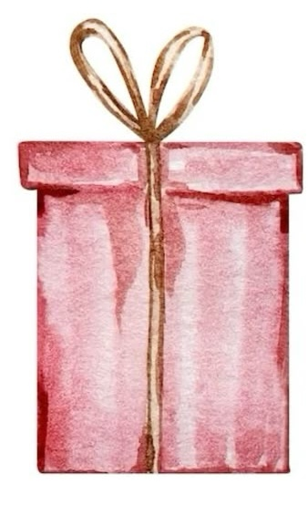
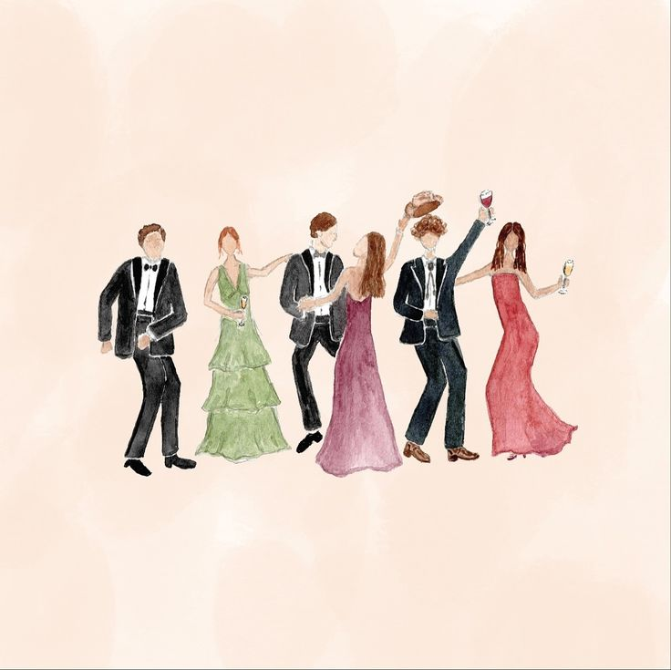

Nos Casamos
María José
& Alejandro
15 . 08 . 2026
Faltan:
00
Días
00
Horas
00
Minutos
00
Segundos
Te esperamos para celebrar nuestra boda
Sábado
15
Agosto

Ceremonia

Parroquia Santiago Apóstol
4:30 p.m.
Cómo Llegar
Recepción

Luxury guarden-Paso del Aguila
7:30 p.m.
Dress Code

Formal
Nos reservamos la gama de rosas, pasteles, blanco y beige.

Tu presencia en nuestra boda es lo más importante pero si deseas darnos un obsequio, preferimos contribuciones en efectivo para facilitar nuestra nueva vida.
Pases
1
Nos encantaría que disfruten una noche especial, por lo que la boda será solo para adultos.

No niños
Confirmar asistencia
Esperamos contar con su presencia
Confirmar Asistencia